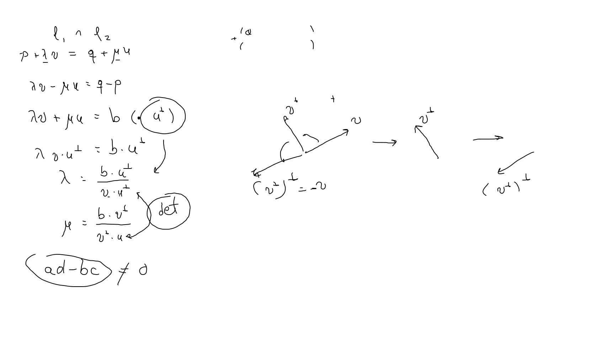

Dado un vector v=(a,b)∈R2 definimos su compadre ortogonal como v⊥=(−b,a).
Dados dos vectores v,u∈R2 y un escalar λ∈R , el producto interior cumple las propiedades:
v⋅v⊥=0
(v+u)⊥=v⊥+u⊥
(λv)⊥=λv⊥
v⊥⋅u⊥=v⋅u
u⊥⋅v=−u⋅v⊥.
Sistemas de ecuaciones
Habíamos traducido el problema de encontrar la intersección entre dos líneas rectas en resolver un sistema del tipo
λv+μu=p,
en el caso de R2 podemos despejar λ y μ usando el ortogonal y sus propiedades se tiene 
λ=u⋅v⊥p⋅v⊥μ=v⋅u⊥p⋅u⊥.
Nuevamente necesitamos para poder despejar que el determinante de los vectores v y u no sea cero, esto es, v⋅u⊥=0.
Observación Los determinantes de una ecuación y de dos vectores coinciden.
Proposición Dado un vector no nulo v∈R2, se tiene, Lv⊥={x∈R2∣v⋅x=0}, es decir, la recta que genera v⊥ son las soluciones de la ecuación lineal homogénea v⋅x=0.
Demostración Una contención es inmediata de las propiedades del producto interior, pues un punto en Lv⊥ es de la forma tv⊥, así v⋅(tv⊥)=t(v⋅v⊥)=0.
Reciprocamente, sea x=(x,y), que satisface la ecuación v⋅x=0, con v=(a,b), supongamos que a=0, entonces x=−aby y así (x,y)=ay(−b,a))=(ay)v⊥, cuando b=0, despejamos y=−bax, asi (x,y)=−bx(−b,a))=(−bx)v⊥, en cualquier caso es un punto en Lv⊥□
Corolario Sean u y v dos vectores no nulos en R2, entonces, u∣∣v⟺ det(u,v)=u⊥⋅v=0
Demostraciónu⊥⋅v=0 cuando v pertenece a la recta generada por (u⊥)⊥=−u□